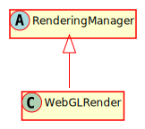

Hierarchy-Diagram
{kind=link}
Legend
 class
class
 abstract class
abstract class
Hierarchy
- RenderingManager
- WebGLRender
Index
Constructors
constructor
Returns WebGLRender
Properties
Protected gl
Protected origin
Protected resource
Protected scene
The scene currently being rendered
Protected text
Protected world
Protected zoom
Methods
Protected add
Parameters
options: Record<string, any>
node: CanvasNode
Returns Record<string, any>
clear
Clears the canvas
Parameters
color: Color
Returns void
initialize
Initialize the canvas for the game
Parameters
canvas: HTMLCanvasElement
width: number
height: number
Returns WebGLRenderingContext
The rendering context of the canvas
render
Renders the visible set of CanvasNodes and visible portions of tilemaps, as well as any UIElement in UILayers
Parameters
visibleSet: CanvasNode[]
tilemaps: Tilemap[]
uiLayers: Map<UILayer>
Returns void
Protected render
Renders an animated sprite
Parameters
sprite: AnimatedSprite
Returns void
Protected render
Parameters
node: CanvasNode
Returns void
Protected render
Renders a graphic
Parameters
graphic: Graphic
Returns void
Protected render
Parameters
node: CanvasNode
Returns void
Protected render
Renders a sprite
Parameters
sprite: Sprite
Returns void
Protected render
Renders a tilemap
Parameters
tilemap: Tilemap
Returns void
Protected renderUIElement
Renders a UIElement
Parameters
uiElement: UIElement
Returns void
set
Sets the scene currently being rendered
Parameters
scene: Scene
The current Scene
Returns void
The ResourceManager